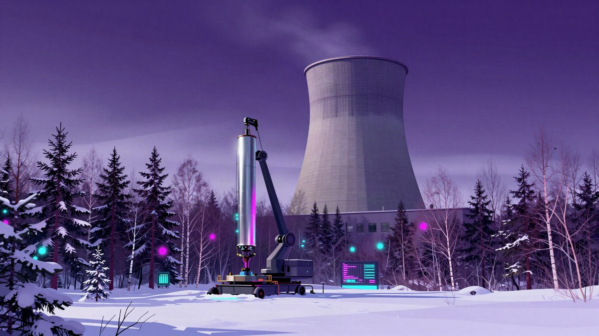

Rosatom prvi put u BN-800 koristi dvaput prerađeno nuklearno gorivo

Rosatom je na četvrtom bloku nuklearne elektrane Beloyarsk počeo pokusnu industrijsku uporabu dvaput prerađenog goriva u reaktoru BN-800. Gorivo je izrađeno od plutonija iz gorivnog sklopa koji je ranije bio ozračen u istom reaktoru. Rosatom tvrdi da je to prvi put da je višekratna uporaba goriva potvrđena na industrijskom reaktoru.
Rosatom je na četvrtom bloku nuklearne elektrane Beloyarsk započeo pokusno-industrijsku uporabu dvaput prerađenog nuklearnog goriva u reaktoru na brze neutrone BN-800. Tvrdi da je time prvi put u svijetu potvrđeno kako se gorivo može višekratno koristiti izravno na industrijskom energetskom bloku.
Riječ je o uran-plutonijskom gorivu izrađenom od plutonija izdvojenog iz gorivog sklopa koji je ranije bio ozračen u istom reaktoru. Taj materijal ponovno je poslužio za izradu goriva za BN-800. Tehnologija predviđa da se postupak može ponavljati, pa nastaje zatvoreni nuklearni gorivni ciklus.
Što je novo
Gorivo iz klasičnih reaktora već je ranije prerađivano i korišteno u brzim reaktorima. Prerada goriva unutar jednog sustava, u istom reaktoru, sada je izvedena prvi put.
Novi gorivi sklop izrađen je poboljšanom tehnologijom dobivanja plutonija. Prema Rosatomu, ona smanjuje broj proizvodnih operacija, a karakteristike goriva ostaju iste.
Proizvodnja
Serijska proizvodnja MOX goriva za BN-800 organizirana je u Železnogorsku. Isti pogon dobiva i kapacitete za opskrbu budućeg reaktora BN-1200M.
Zatvaranje gorivnog ciklusa trebalo bi povećati učinkovitost korištenja urana i plutonija, smanjiti količinu radioaktivnog otpada i ovisnost nuklearne energetike o zalihama prirodnog urana. Rosatom kaže da će ti rezultati poslužiti kao temelj za razvoj reaktora četvrte generacije.
Riječ je o pokusno-industrijskoj uporabi, a tvrdnje o učinkovitosti i smanjenju otpada za sada dolaze od samog proizvođača.
Izvor: iXBT